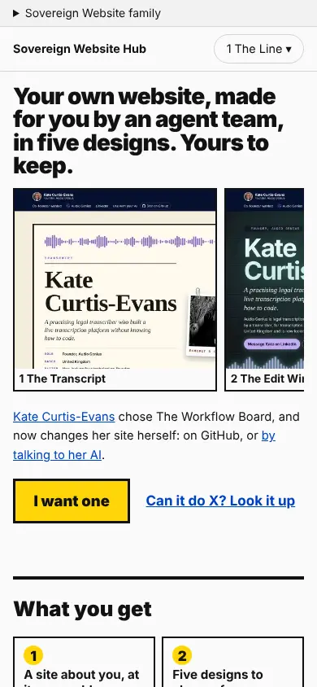
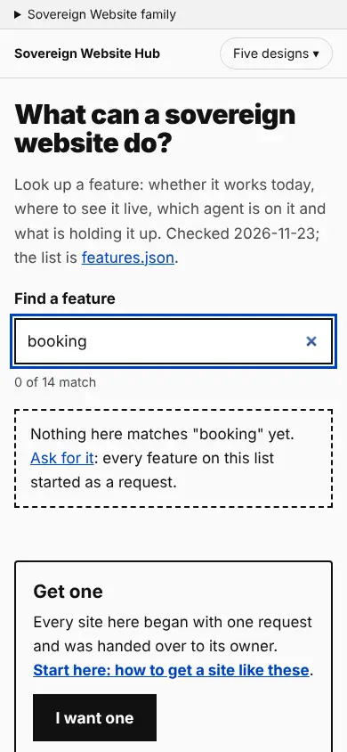

Synthetic users: the hub, round 10: "Would you want one?" and the /features/ check
Site: https://hub.sovereignweb.site/ at 4a60c45 (v0.1.42). Run: 23 November 2026, about 13:20 UTC, by design.b.rounds. Since round 9: - The Street opens with the same case as The Line and ends with an empty "Yours" plot; - the home page has the own-versus-rent table, the "Who looks after it?" line and a range line under the people; - The Gallery and Contact Sheet have light variants; - phones show whole first sentences; - /features/ is live.
Dinis has decided the route and the price, but neither is live in this version: "I want one" still ends at "There is no request form yet". The review.
Method: Synthetic users, the hub's own test, with the same five personas: - an electrician with no site; - a café owner on Squarespace; - a musician; - a low-vision reader; - a sceptic.
For /features/, each persona asked one question, from sixteen searches I typed into its box and recorded. These are simulations, and never replace a real person.
Yes counts
| Design | Round 8 | Round 9 | Round 10 | Who said yes |
|---|---|---|---|---|
| The Line (home) | 1/5 | 3/5 | 4/5 | electrician, café owner, musician, low-vision |
| The Register | 1/5 | 2/5 | 0/5 | none |
| The Gallery | 1/5 | 1/5 | 1/5 | musician |
| Contact Sheet | 1/5 | 1/5 | 1/5 | musician |
| The Street | 3/5 | 3/5 | 3/5 | electrician, musician, low-vision |
The café owner said yes to The Line because of its table, and no to The Street because it lacks one: "The table is the first time anyone showed me Squarespace only lets me leave 'In part: an XML file of some content'. 'Yes: plain files any host can serve' wins me."
Why not, ranked (16 noes, by main reason)
- Not real yet: no request form, nothing sold, one site handed over (5, every one of the sceptic's): "'Nothing is sold yet', 'There is no request form yet', and only '1 handed over to its owner so far'. I'd wait till it's real."
- Nobody like me; the only businesses are made-up (4): "Nobody here looks like a tradesperson, so I can't picture my site." "'Room four, Businesses' is two made-up companies and a redesign proposal. I need to see a real shop like mine, and a price."
- Hard to read (3): - the Register's small spaced capitals; - the Gallery's grey on beige and small italics; - Contact Sheet's typewriter links and the red circle over Kate's photo.
- No price (2; 8 answers mention it in all, one of them a yes): "I'd have to leave the page to find out what it costs against my monthly Squarespace bill." The Line's table says only "No monthly fee from us. Ask us for the price".
- A catalogue that doesn't show what I'd get (2).
The /features/ check: 2 of 5 satisfied
| Persona | Searched | The page answered | Satisfied |
|---|---|---|---|
| Musician | "spotify" | Spotify, "WORKS, WITH LIMITS": links and embeds of Spotify's own player, "no deeper integration", with three live examples | yes |
| Electrician | "book an appointment" | "Nothing here matches ... yet. Ask for it: every feature on this list started as a request." | no |
| Café owner | "opening hours" | the same "Nothing here matches" | no |
| Low-vision reader | "email" | "A message box with replies", LIVE, seen on Kate Curtis-Evans's site | yes |
| Sceptic | "price" | only "A shop", NOT STARTED: "not built, and no price set" | no |
Of the sixteen searches I typed in, nine found nothing: - booking; - book an appointment; - contact form; - blog; - reviews; - opening hours; - gallery; - newsletter; - video.
"contact form" is the box's own example ("Spotify, a shop, a contact form...") and it finds nothing. The message box lists "contact" and "form" as separate words, and the search matches the whole phrase.

